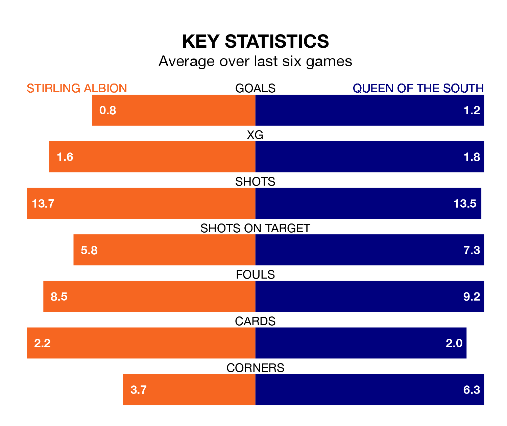

Struggling Stirling Albion face Queen of the South at the Forthbank Stadium on Saturday looking to build on a win in their last league outing.
After securing all three points with a 0-1 victory over Kelty Hearts on April 13, the Binos sit ninth in League One.
They travel to play a Queen of the South side seventh in the standings, who also won their last match, 2-0 against Edinburgh City.
In Blair Currie, Stirling can rely on one of the league's safest pair of hands. He has kept nine clean sheets in his 32 appearances this season, and no 'keeper has prevented the opposition scoring more often in League One.
In Queen of the South's net, Harry Stone has four clean sheets in 21 games.
Albion are in bad form in League One, with one win and five losses from their last six games.
With two wins and a draw over that period, the Doonhamers's form is better – they have taken seven points from 18, compared to the Binos' three.
With 35 goals in 33 games so far this season, the hosts are the league's second-lowest scorers with 1.1 goals per game. And they are conceding more than average, letting in 56 goals at a rate of 1.7 per game.
The away team are also below average scorers, with 1.3 goals per game, compared to a league average of 1.6. They have conceded 1.5 goals per game.
In the last three years, Stirling and Queen of the South have played each other on three occasions. Stirling won one of them and they drew the other.
Their last meeting was on March 2, when they played out a 2-2 draw.
Updated: 11:31 (UTC), 15/04/24